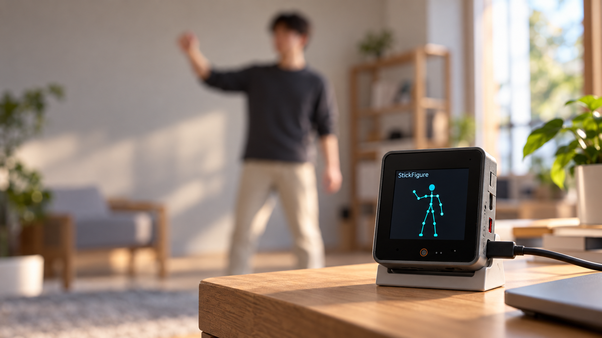

Fit the memory
An activation-aware backbone adds channel capacity after spatial downsampling, keeping large intermediate tensors under control.
POSE-ONLY EDGE VISION
Enabling Pose-Only IoT Cameras
for Privacy-Preserving Edge Vision
The University of Hong Kong
Background: AI-generated CoreS3 demo concept
Body motion can tell a useful story.
Faces, clothing, and room details don’t need to leave the camera.
p95 pose latency
STM32H753per skeleton record
12-joint outputpeak activation RAM
Model activations onlyIndoor cameras can support assisted living and activity-aware spaces. But sending raw video also exposes appearance and household details that many body-motion tasks do not require.
StickFigure processes RGB frames locally and exports compact skeletons for activity recognition. During real-time monitoring, raw frames stay local and ephemeral.
Skeletons reduce appearance-rich exposure; body geometry and motion can still carry sensitive information.
Local images in. Useful skeletons out.
An activation-aware backbone adds channel capacity after spatial downsampling, keeping large intermediate tensors under control.
A lightweight hierarchical MLP selectively corrects elbows and wrists using visual features and kinematic context.
One empty-scene snapshot supports site calibration. Motion-triggered execution reduces work during inactive periods.
A vision for pose-only sensing with M5Stack CoreS3.

An on-device skeleton display makes the pose-only interface easy to see. This concept uses the form of the M5Stack CoreS3; the paper’s measured hardware prototype is the STM32H753 camera below.
Evaluated on NTU RGB+D, Penn Action, and single-person deployments.
Pose PCK@0.10
NTU RGB+D · FP32HAR Top-1 accuracy
NTU RGB+D · ±1.06%, three seedsActivity macro-F1
Separate annotated deployment sessionCompared with the RTMPose-S-based reference, StickFigure uses 96.5% fewer parameters and 99.3% fewer MACs, with lower pose and activity-recognition accuracy. Full comparisons are in the paper.
The design, evaluation, and deployment findings.
Code and dataset links will be added when available.